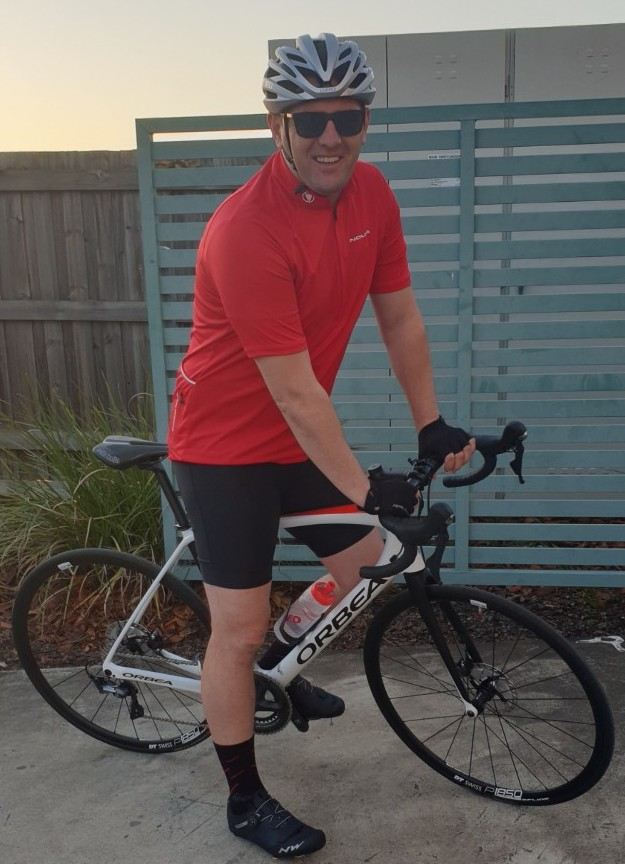
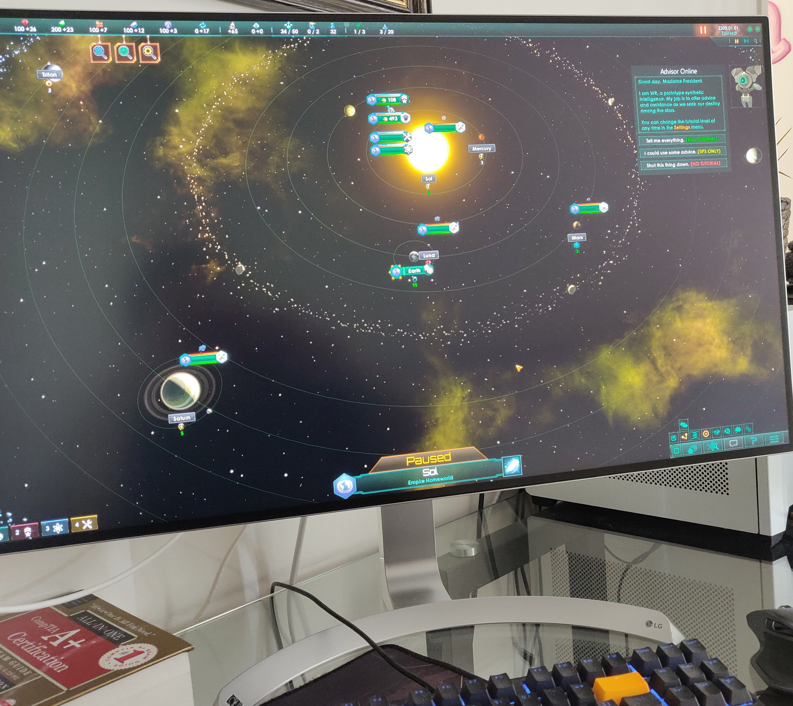

About
About Me
Through my professional life, I have worked in various industries, always in search of my calling in life. However, in the back of my mind, I only ever had one dream that one day I would work in the tech industry. Recently I have decided to fulfil my dream. That has led me to sign up for Coder Academy Brisbane to get a diploma in Information Technology and kick off my career as a developer.
Technical Skills
HTML
Strong understanding of HTML5 and its function in development.
CSS
Strong understanding of CSS3 and its use in mobil first and responsive designs.
GIT & GITHUB
Competent in Git version control and Github integration.
RUBY
Working knowledge of Ruby programing language.
JavaScript
Working Knowledge of JavaScript for front end development.
Personal Interest
Sports
I enjoy all sports, and I have played many throughout my life; basketball, ice hockey, tennis and many others. However, the two that have stuck with me have been football/soccer and cycling. My favourite football club and cyclist are Liverpool FC, and Peter Segan respectively.
Video Games
When time permits, I like to relax by playing video games. I first started playing games in the '80s when my parents got me an Atari console. Gaming and Sci-Fi had a significant influence on me. Through it, I developed a passion for technology. My favourite type of games are strategy, and Stellaris tops that list.
